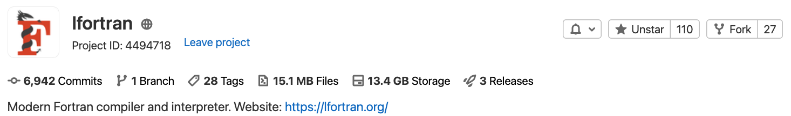
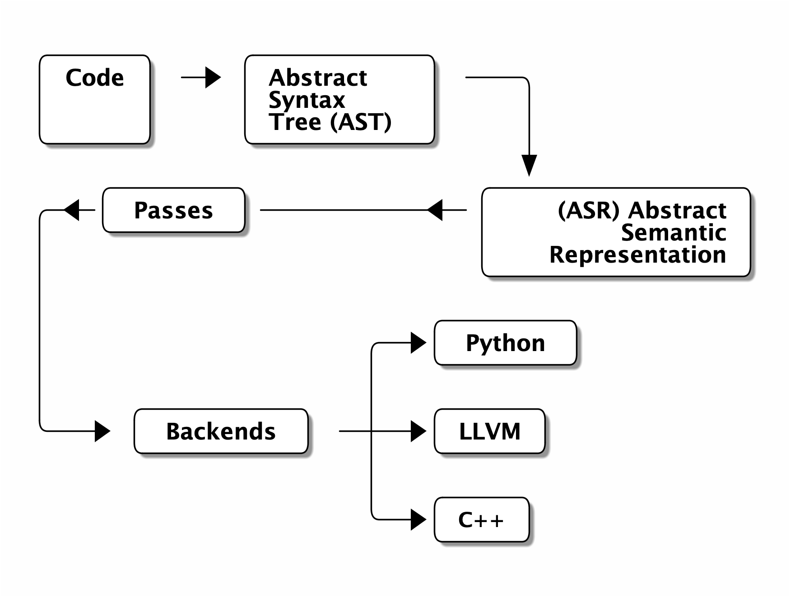
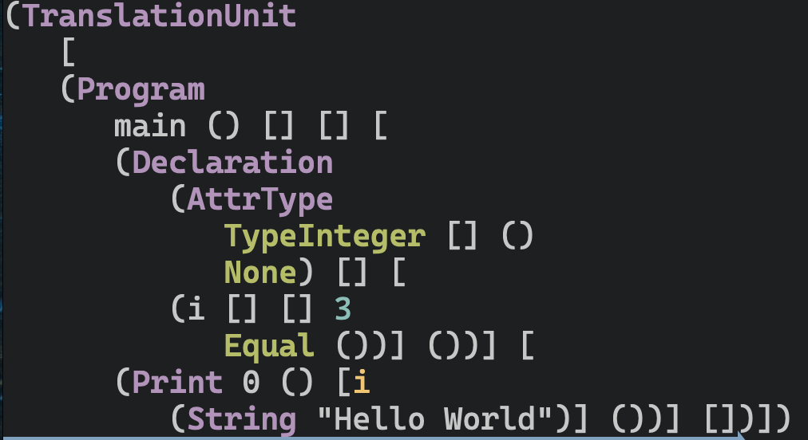
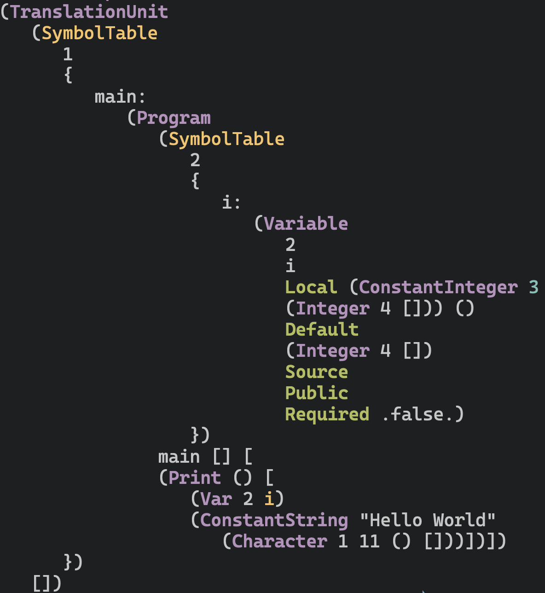
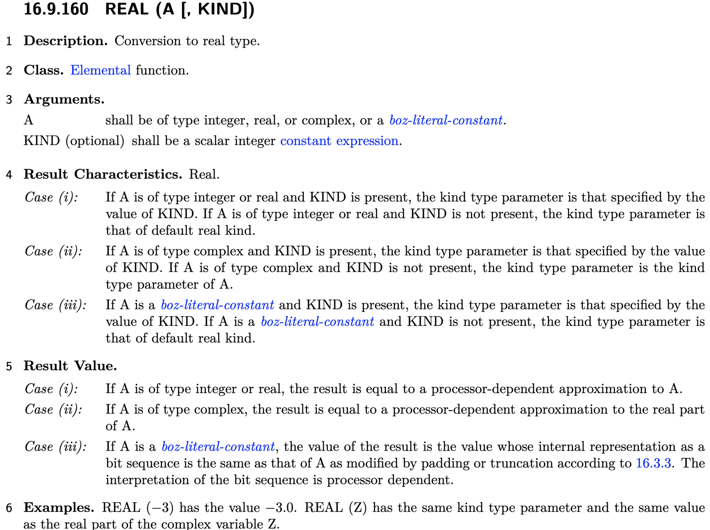
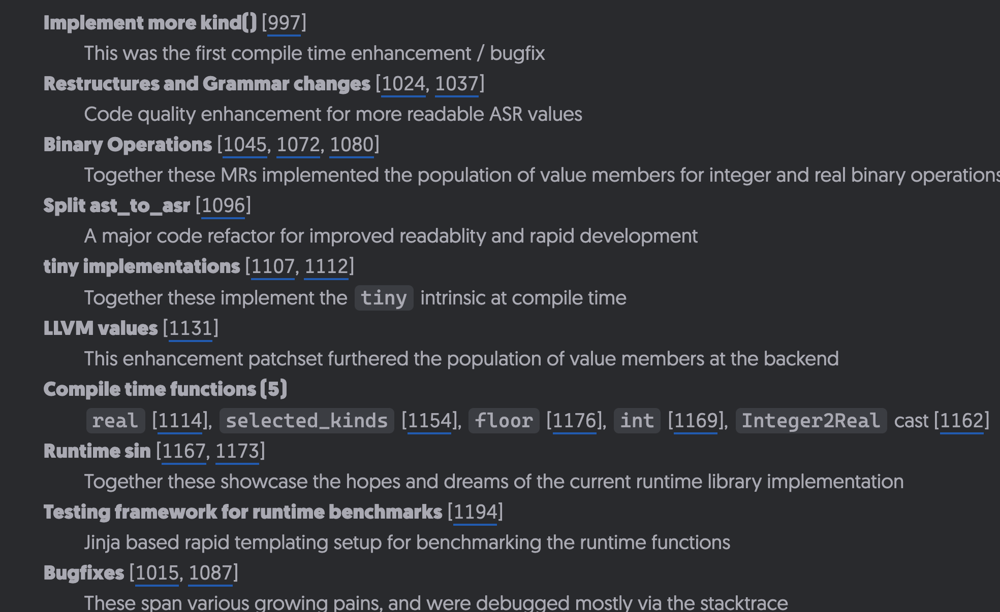

Implementing Fortran Standardese within LFortran
Rohit Goswami .and. Ondřej Čertík
Created: 2021-09-24 Fri 01:14
Brief Introduction
Hello!
- Find me here: https://rgoswami.me
- Who?
- Rohit Goswami MInstP
- Doctoral Researcher, University of Iceland, Faculty of Physical Sciences
- Rohit Goswami MInstP


Logistics
- All contents are hosted on GitHub
- Slides are in
presentations/fortranCon2021/gsocLFortran
- Slides are in
- Questions are welcome anytime
LFortran
Introduction

| Language | Files | Lines | Code | Comments | Blanks |
|---|---|---|---|---|---|
| C | 3 | 1023 | 694 | 191 | 138 |
| C Header | 57 | 14237 | 11416 | 1041 | 1780 |
| CMake | 11 | 430 | 361 | 16 | 53 |
| C++ | 54 | 30745 | 26911 | 1560 | 2274 |
| C++ Header | 1 | 8938 | 8297 | 348 | 293 |
| FORTRAN | 20 | 1738 | 1344 | 174 | 220 |
| Python | 2 | 224 | 191 | 4 | 29 |
| Total | 148 | 57335 | 49214 | 3334 | 4787 |
Structure

Features
- Runtime Libraries
- Pure Fortran | Impure
- ASR
- Guarantees compilation –> Wrappers
- Parser
- Currently almost all of F2018; including F77
- LLVM
- Canonical backend, includes compile time evaluated expressions
- Jupyter
- Native execution as a kernel
Representations
Reading Code I
__attribute__((externally_visible)) main (integer(kind=4) argc, character(kind=1) * * argv) {integer(kind=4) D.3878; static integer(kind=4) options.1[7] = {2116, 4095, 0, 1, 1, 0, 31}; _gfortran_set_args (argc, argv); _gfortran_set_options (7, &options.1[0]); MAIN__ (); D.3878 = 0; return D.3878;}
MAIN__ () {static integer(kind=4) i = 3; {struct __st_parameter_dt dt_parm.0; try {dt_parm.0.common.filename = &"hi.f90"[1]{lb: 1 sz: 1}; dt_parm.0.common.line = 3; dt_parm.0.common.flags = 128; dt_parm.0.common.unit = 6; _gfortran_st_write (&dt_parm.0); _gfortran_transfer_integer_write (&dt_parm.0, &i, 4); _gfortran_transfer_character_write (&dt_parm.0, &"Hello World"[1]{lb: 1 sz: 1}, 11); _gfortran_st_write_done (&dt_parm.0);} finally {dt_parm.0 = {CLOBBER};}}}
- GIMPLE is an internal
gfortranrepresentation…
Reading Code II


- AST on the left
- ASR on the right
Reading Code III
program main integer :: i=3 print*, i, "Hello World" end program
lfortranhas a nicer intermediate structure
conda create -n lf
conda activate lf
conda install lfortran \
-c conda-forge
lfortran --show-asr hi.f90
Fortran and Standardese
- The ASR can be used to implement the standard verbatim
Real Definition

Real Arguments
if (func_name == "real") { if (args.n == 1) { ASR::expr_t* real_expr = args[0]; int real_kind = LFortran::ASRUtils::extract_kind_from_ttype_t (func_type); if (LFortran::ASR::is_a<LFortran::ASR::Real_t>(*func_type)) { if (real_kind == 4){ float rr = ASR::down_cast<ASR::ConstantReal_t> (LFortran::ASRUtils::expr_value(real_expr))->m_r; value = ASR::down_cast<ASR::expr_t> (ASR::make_ConstantReal_t(al, x.base.base.loc, rr, func_type)); } else { double rr = ASR::down_cast<ASR::ConstantReal_t> (LFortran::ASRUtils::expr_value(real_expr))->m_r; value = ASR::down_cast<ASR::expr_t> (ASR::make_ConstantReal_t(al, x.base.base.loc, rr, func_type)); } } // TODO: Handle BOZ later } else { throw SemanticError("REAL must have only one argument", x.base.base.loc); }
Integer Arguments
else if (LFortran::ASR::is_a<LFortran::ASR::Integer_t>(*func_type)) { if (real_kind == 4){ int64_t rv = ASR::down_cast<ASR::ConstantInteger_t>( LFortran::ASRUtils::expr_value(real_expr))->m_n; float rr = static_cast<float>(rv); value = ASR::down_cast<ASR::expr_t> (ASR::make_ConstantReal_t(al, x.base.base.loc, rr, func_type)); } else { double rr = static_cast<double>(ASR::down_cast <ASR::ConstantInteger_t>(LFortran::ASRUtils:: expr_value(real_expr))->m_n); value = ASR::down_cast<ASR::expr_t> (ASR::make_ConstantReal_t (al, x.base.base.loc, rr, func_type)); } }
Conclusions
Omitted Topics

The End
Acknowledgements

- Prof. Hannes Jónsson as my supervisor, Prof. Birgir Hrafnkelsson as my co-supervisor, and my committee member Dr. Elvar Jonsson
- Dr. Ondřej Čertík at Los Alamos National Laboratory
- Quansight Labs (Dr. Ralf Gommers, Dr. Melissa Weber Mendonça and Dr. Pearu Peterson)
- Family, pets, Groupmembers, audience
Thanks!
Implementing Fortran Standardese within LFortran Rohit Goswami .and. Ondřej Čertík Created: 2021-09-24 Fri 01:14